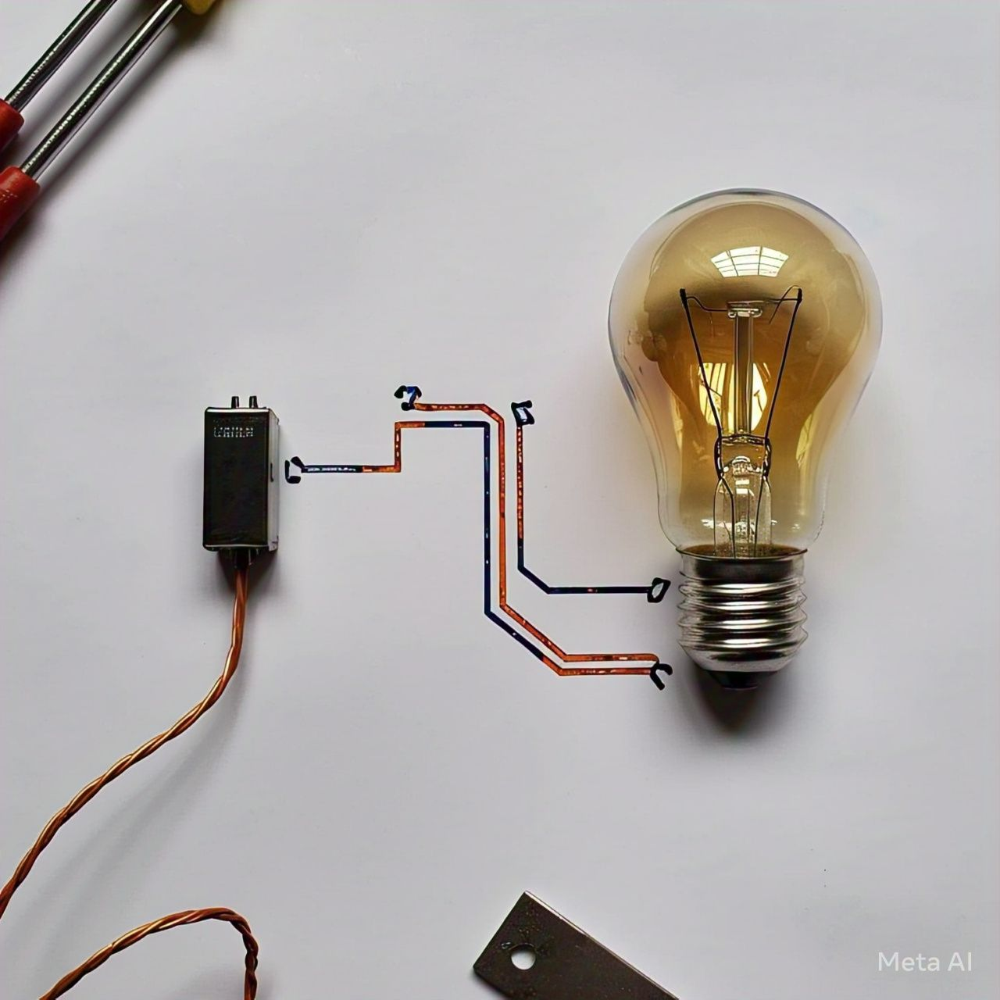
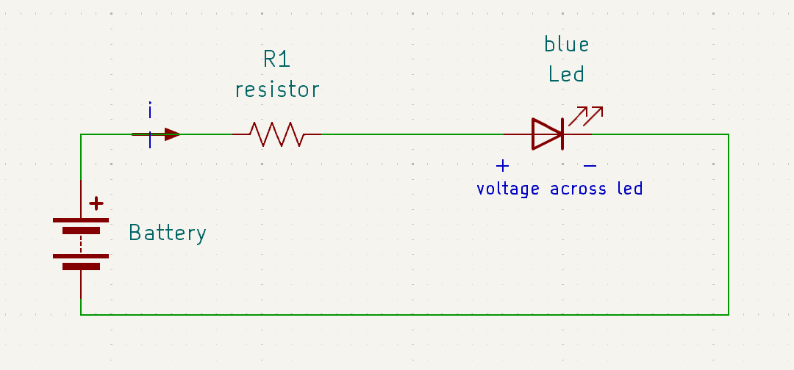

Power and Energy of Electric Current
Energy is commonly defined as the ability to do work. You’ve likely encountered this concept in various contexts during your studies or daily life.
So what about electrical energy ?
Electrical energy is a form of energy resulting from the flow of electric charge.
Energy is defined as the capacity to do work. It represents the amount of work that can be done by a system.
For example,Imagine lifting a heavy book onto a shelf. The effort you use to lift it is energy. When in a electrical context ,If a 100-watt light bulb is turned on for 1 hour, it uses 100 watt-hours (Wh) of electrical energy.
Energy is typically measured in watt-hours (Wh) or kilowatt-hours (kWh). You may have encountered this term often,your electricity bill is calculated based on the total amount of energy you consume over a billing period.
For example,A 100-watt bulb running for 10 hours consumes 100 W × 10 h = 1,000 Wh or 1 kWh of energy and you pay according to that.
In above example when I say ‘If a 100-watt light bulb’ you may think what dose that Watt term mean
It leads to our next topic called ‘Electric power’
Electric Power
Electric power is defined as energy per unit time. Ie ,it's the amount of energy consumed per unit time. It is measured in watts (W).
1 watt (W) is defined as the amount of power used when 1 joule of energy is transferred or consumed in 1 second.(jole is the unit of energy)
P = Energy⁄time
so (Watt=j/s)
Example:
If you pour the water quickly, you use more power because you are doing the same work (filling the bucket) in a shorter amount of time. If you pour the water slowly, you use less power because the same work is spread out over a longer time.
Example of power in the electrical context :
Imagine you have a 60-watt light bulb. This means the bulb uses 60 joules of electrical energy every second it is on. So, power in this case is how quickly the bulb consumes electrical energy.
Also there are two types of power that is
Positive power,Negative power
(the classification of power as positive or negative is a convention adopted for consistency in calculations and analysis. This convention simplifies calculations and makes it easier to determine whether a component is acting as a source or a load in the system.)
Positive power
Positive power occurs when energy is being supplied to the load (e.g., resistor, motor, or any device that consumes power). The system is receiving power from the power source.
This typically happens when the current flows from the positive terminal to the negative terminal of the load, and the voltage is positive across the load.
Negative power
Negative power occurs when energy is being delivered by the system (for example, in the case of a generator or motor acting as a power source). The system is giving back energy to the power source
Negative power typically happens when the current flows in the reverse direction (from negative to positive terminal), and the voltage is negative across the load. It can occur in systems like regenerative braking in motors, or when a source is supplying power to a system and that system returns power back to the source.
Absorbed power and Deliverd power
Power is said to be absorbed by a component when the component consumes energy from the system
Positive power indicates absorbed power in most electrical systems.
For example , A light bulb connected to a battery absorbs power from the battery
Power is said to be delivered by a component when it provides energy to the system.
Negative power is often used to represent delivered power.
For example , The battery is delivering power to the fan by supplying electrical energy
Absorbed Power = Positive
Delivered Power = Negative
Power delivered by one component (like a battery) is equal in magnitude but opposite in sign to the power absorbed by another component (like a bulb or motor) This follows the law of conservation of energy, ensuring that energy is neither created nor destroyed, only transferred.
Absorbed Power = - Delivered Power
When someone asks how much power is delivered by a component, you should explain
Power delivered is not zero; instead, it is the negative of the absorbed power. This follows the convention: Delivered Power = - Absorbed Power
If a device absorbs 50 W of power,The power delivered by the source is -50 W (negative sign indicates delivery).
Coming to Equation part
We know
P = Energy⁄time (equation-1)
Mathematically writing
(equation-2)
ie
p(t)=power in W , P(t) is the instantaneous power at time t
(eg: power at 5s is P(5))
Rate of change of energy with respect to tim
This equation is more general and describes power as the rate at which energy is transferred, converted, or used.
From above eqn we can rewrite equation as
Interating both side we get
Energy equation: E = ∫ P dt
Connecting with voltage and current
Multiply and divide by dq in RHS
Here dE/dq is voltage and dq/dt is current
de/dq = This equation tells us that the rate of change of energy (dE) with respect to charge (dq) is equal to the voltage (V) across the system
dq/dt This equation defines current (I) as the rate of flow of charge over time
The equation essentially relates how voltage, current, and energy are connected in terms of charge and time. It shows that the rate at which energy is transferred in a circuit is the product of the voltage across the system and the current flowing through it, over a specific time period.
Problem: A device operates with a voltage of 120 V and current of 2 A. What is the power consumed by the device?
P= V x I
P = 120 X 2 = 240W;
P=240W
Practically Applying section
We will use a basic circuit with a battery, a resistor, and a multimeter to measure voltage and current, and we'll calculate the Wattage of led
Steps to Calculate Wattage
Connect the battery, resistor, and blue LED in series

Place the multimeter in series to measure current and across the LED to measure voltage
Use the multimeter to measure
Voltage (V) across the LED
Current (I) flowing through the LED.
Calculate Power:
P = V X I
Where P is the power (wattage) of the LED,V is the voltage across the LED, and I is the current through it.
Example Calculation
Measured Voltage (V) : 3.2 V (typical for a blue LED).
Measured Current (I) : 20 mA (0.02 A)
Power (P) : 3.2 V X 0.020 A = 0.064 W (64 mW)
Thus, the blue LED consumes 0.064 W of power.
For finding energy we need duration as we know Energy = Power x Time
[ from eqn (power=enegy/time) ]
If you have a blue LED running at 3V and 20mA (0.02A), and it operates for 2 hours
E = P x t
E =0.064 W x 2 h = 0.128 Wh
This means the energy consumed by the LED over 2 hours is 0.128 watt-hours (Wh)
Section flow and summary
Energy | Power | Equations | Hands on exp
"Hope you enjoyed! Thank you for reading, and happy learning. If you have any doubts, feel free to email me at me@magnetonn.in."